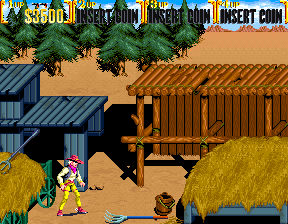

No meio do caminho tinha um rastelo, tinha um rastelo no meio do caminho
Você mal da alguns passos em direção a pilha de fenos e quando menos espera pisa em algo, você nem sabe de onde é que isso vem, mas leva uma pancada no rosto.
Alguns segundos são necessários para perceber que na verdade você pisou em um rastelo, talvez esse fosse o maior ataque surpresa que você recebe em semanas, não fosse a sequência de bandidos que se aproximam a medida que você tenta se recuperar.
Tiros começam a ser disparados em sua direção, há muitos inimigos e você precisa decidir o que fará nessa situação.
